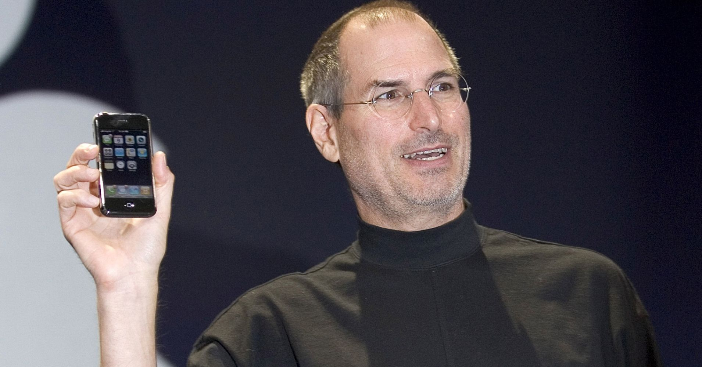

At Macworld 2007, Steve Jobs introduces iPhone and its revolutionary
touch-screen interface
Here is Time line of Steve Jobs' Life:
1955 - Steven Paul Jobs is born in San Francisco to Joanne Carole Schieble and
Abdulfattah Jandali. The then-unmarried couple give up their son to adoption. Paul and Clara Jobs
become Jobs' non-biological parents.
1961 -The Jobs family moves to Mountain View, Calif., part of what would later
become known as Silicon Valley.
1968 - Jobs calls Bill Hewlett, the co-founder and co-namesake of Hewlett-Packard,
looking for spare parts to build a frequency counter. Hewlett gives Jobs the parts, as well as an
internship with the company that summer.
1970 - Meets future Apple co-founder Steve Wozniak through a friend. In Wozniak's
2006 autobiography, "iWoz," he notes that the two "hit it off" immediately, despite their four-year
age difference.
1972 - Graduates from Homestead High School in Cupertino, Calif., and enrolls at
Reed College in Portland, Ore., only to drop out a semester later. Jobs would go on to sit in on
classes that interested him, such as calligraphy, despite not getting credit for them.
1976 - Co-founds Apple Computer with Wozniak and Ronald Wayne. That same year, the
company sells the Apple I in the form of a kit that sells for $666.66.
1980 - Apple goes public, putting Jobs' net worth north of $200 million.
1986 - For $10 million, buys the Graphics Group division of Lucasfilm that becomes
Pixar Animation Studios.
1988 - NeXT Computer releases its first computer.
1993 - NeXT discontinues hardware business, gets into software instead. The company
is renamed NeXT Software, Inc.
1996 - Returns to Apple, as an adviser, after it buys NeXT for $429 million.
1997 - Introduces the Apple Store, which lets consumers custom-order Apple products
directly from the company online.
1998 - Introduces the iMac, which becomes commercially available in August.
2002 - Apple introduces the first Windows-compatible iPods at Macworld.
2003 - Introduces "the day hell froze over," announcing iTunes' compatibility with
Windows.
2004 - Jobs undergoes surgery to remove a cancerous tumor in his pancreas.
2007 - Inducted in the California Hall of Fame by Gov. Arnold Schwartzenegger.
2009 - Jobs takes a 6-month leave of absence for medical reasons.
2010 - Convinces Apple Corps. and EMI Group to make Beatles albums available on
iTunes: "We love the Beatles, and are honored and thrilled to welcome them to iTunes...It has been a
long and winding road to get here. Thanks to the Beatles and EMI, we are now realizing a dream we've
had since we launched iTunes 10 years ago."
2011 - Steve Jobs dies at home, surrounded by his family.
"Sometimes when you innovate, you make mistakes. It is best to admit them quickly, and get on with
improving your other innovations."--- Steve Jobs